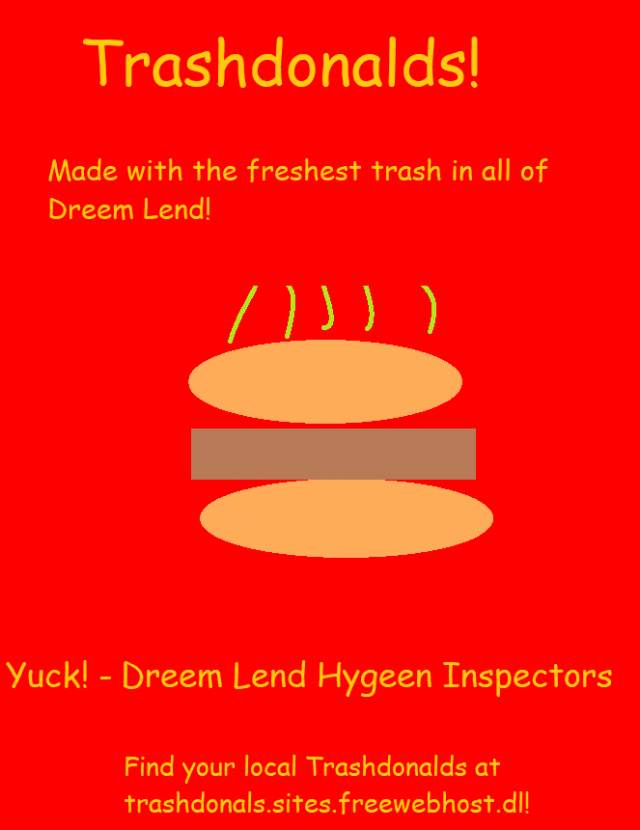
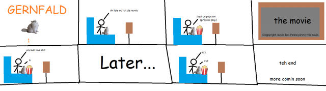

Episode 29: August 21th, 2019
Back to News Archive
| Back to Homepage | Back to Shef Werld<< Previous Episode | >> Next Episode

"A thing just happened, resulting in people running out of ideas. We will update you never I don't know."
$5.00 | ~8 ghost dollars | ⭐25 coins
Does not include potential cost from surprise mechanics (they're not lootboxes!!!), purchases from Shef Kerbi's Apparel or preordering the Special Edition
-------------------------
BREAKING NEWS
written by Reali
Thing 1 repellent has gone out of stock in many major sellers. The reason is because a person called 'Thy N. Guhwon' bought all the repellent to supposedly 'add to his repellent collection.' Researchers say that it will take about a week for the repellent to come back in stock.
IN OTHER NSEW
written by Reali
Macrohard has announced that Walls 1.3 will be coming out soon.

BREAKING NEWS
written by CrazeePi's Disembodied Voice
Recently, the once thought to be extinct Cheeseburger Spider has been found being secretly bred and served to bird customers at Trashdonalds. We managed to get an interview with a penguin we found at Trashdonalds.
Penguin: Keynsun DDDO?
Interviewer: And what have you come here to order?
Penguin: Oh no I'm just here to clean clocks.
Interviewer: What do you mean?
Penguin: I'm a professional clock cleaner, I clean clocks for $19.99 plus $5 if you call now.
Interviewer: I see, and have you ever eaten a Cheeseburger Spider before?
Penguin: As a definite monkey I'm not supposed to but yes.
Interviewer: You're a monkey?
Monkey(?): That's what my washing mach- oh. Oh no.
Interviewer: What?
The monkey(?) left at this point
In other news, we learned absolutely nothing from this interview.
MARRE RIO ON TRIAL
written by Carmes
Marre Rio, the man who has been said to blow up several pancake factories, has been on trial. He admitted he threw a jug of diet bathwater at each of them (Luckily, Shef Kerbi discontinued it, so he won’t get sued).
He is now in prison for 10 years.

BREAKING NEWS
written by CrazeePi's Disembodied Voice
Recently, Stoify has been found fighting Yoemotoro, who has been assaulting him by creating and throwing more Stoifys at him. We asked Stoify what he thinks of this. Stoify did not have a face to respond with and proceeded to bleep out of existance before Yoemotoro threw another Stoify.
BREAKING NEWS
written by Carmes
Dreamtronix, who recently released the SuperPhone 2, has just announced the Dreambook. It will have all the emojis the SuperPhone has, as well as many more exiting features.
Many people are exited for the release of it.
Since I, Carmes, is a huge fan of Dreemtronix, their products (and especially their emoji), they have allowed me to show to SKNN viewers screenshots of me installing a preview of the OS that will run on it, DreamOS.

WHAT HAPPENED THERE??? WHAT IS THIS ALIEN LANGUAGE AT THE BOTTOM???
Note: (it translates to 64424509452 if you run it through a translator)
Now I don't wanna give my own opionion but...
OPIONION WITH SHEF KERBI
breaking news breaking news breaking news breaking news breaking news breaking news
So we told you Shef Kerbi News Network fans on our Scratch page that you could post anything with the #SKNN hashtag and you could end up in our paper! In this episode, we'll respond to some of your feedback with the new SKNN format, as well as show some of your cool stuff!
We began this issue's section with
"new iphone"
and here were your responses:
openPoll wrote:
"Nintendo brought out a new system (Super New Mini Power Nintendo 23DSi lite light microXL DDLL e U Boy Virtual Advance SP micro Player & Knuckles ColorCube64 &Watch Entertainment system featuring Dante from the Devil May Cry series). Could you sell it please cause I can't find it."
That is very cool and the Shef Werld team has been contacted about that. We've got some big things in the works, however I unfortunately can't share it at the moment.
yes5xg wrote:
"it didn't work"
They later responded by sending this image over to the Shef Kerbi News Network Opionion Collection Department:

huh so that's where bon went. Also, who's Blayyd Nite and why does Blayyd Nite have a supermarket? You know what I might go buy that company. Gotta get rid of the competition. Definetly not trying to monopolise literally every industry in Dreem Lend.
If you would like to submit your own opionion for Shef Kerbi, just go to our social media, on Twitter, Instagram or Scratch.
But prefably Scratch because that's what everyone uses
----------------
JOHN GAMEMAN BREKING SCAREY NEWS super ah!!!!!
by John Gameman
recantly john gameman profesonal game and man an maneged to get a erly copy of "shef kerbi appel our somthing port for xbox.exe" but john gameman proofessonal game and man man forget that exe is bad! john gameman porfesional game and man man play "shef kerby apple hor something port for xbox.exe" and it play normaly but then werd head fall down so john gameman professonael game and man man colec it but then get 666 score! poop cat apear on sied of scren and say "JOHN GAMEMAN PROESSONAL GAME ANDMAN MAN YOU HAD DONE THE BADS WHY!" and then die. mr kerbi also look at john gamenan profesonal game and man man and say "you wil regert this!" and thn also die! john gameman professonal game nad man man scare a lot when sudenly santa come out of scren. "JOHNGAMEMAN PROFESONAL GAME AND MAN MAN I AM SANTA CLAUS TIEM TO GO TO UNDR WORLD BECAUS IF I SAY OTHR WORD JOHN GAMAN MOM WOULD MAKE ME GIEVE MONEY TO good at call of duty jar THEN DIE" HE SCREAM. john gameman profeesonal game amnd man man super scare but then JOHN GAME MAN REMEMBER! JOHNGAMENAM AWESOME! JOHN GAMEMAN KICK SANTA CLAUS WITH AWESOM CALL OF DUTY SKILLS! YES!
rrember to watch ouit for early copy of "shef kerbi appel our somthing port for xbox.exe" or alse santa may come for you an make you deads!

COMIX
by Keynsun DDDO, Carmes, Gernfald and Reali
Note: Candy Sadness is currently on break
Keynsun DDDO - Ghost Electronics Store Part 2

Carmes - The Stuff World! 4!

Reali - A Comic of Some sort (with bon starbuckle)

Gernfald - Gernfald 1

ACTIVITY
written by Reali
Answers - Sudoku 2
weather
written by Zeke Teddy
Today the weather is going to be stormy. Max of 11 in the afternoon but it'll go down to 2
Tomorrow it won't be stormy, thankfully, but it will be pretty windy. It'll be 3-ish in the morning so plz don't go outside in the morning, but it'll warm up to 14-ish in the afternoon. Buuuuuut there'll be a lot of wind so it'll still feel cold
{kind=link}
{kind=link}
THANK YOU FOR WATCH. PLEASE TUN E IN NEXT TIME FOR MORE NESW

Shef Kerbi News Network follows the guidelines and conventions set by the 1984 High Quality News Act of Dreem Lend, which states
that any news published is to be of a high quality, is to remain unbiased and to show all sides of a news report, does not attack anyone, and protects the privacy
of people whose identities don't want to be revealed.
If you would like to file a complaint regarding content use, please message SKNN through our Scratch account. We also have a Twitter and Instagram account if you
prefer.
Shef Kerbi News Network respects the ancestors of Cappy Town, and understands that they are the reason why Dreem Lend exists.
Shef Kerbi News Network is proud to be a subsidiary of Shef Werld
this website is best viewed with Ned's Escape